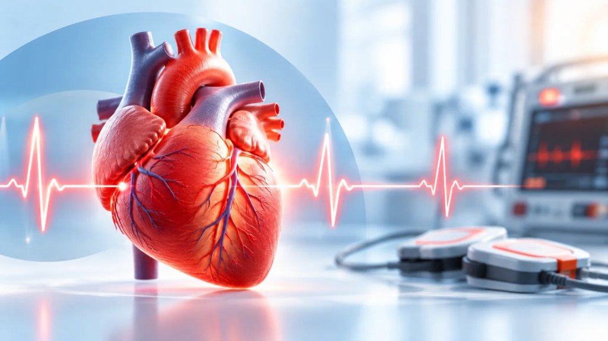

Comprehensive cardiovascular diagnosis, preventive cardiology, ECG, echocardiography and evidence-based clinical management for heart diseases in Mysuru.
Click here to enter your details and book your appointment now.
Get in touch with us to get a second opinion from our experts.
Click here to get your queries addressed at earliest

Our Cardiology department delivers specialized clinical and preventive cardiovascular care for ischemic heart disease, rhythm disorders and heart failure. Equipped with digital 12-lead ECG, 2D echocardiography and a 24/7 cardiac ICU telemetry monitoring unit.
Dedicated clinical infrastructure, emergency readiness and specialized medical technologies designed for comprehensive patient recovery.
Our team of specialist doctors is dedicated to providing expert care across a wide range of medical fields.
Find answers to common questions about consultations, diagnosis, clinical procedures and hospital care.
Watch healthcare guidance, clinical insights and patient awareness videos from Sulakshaa Hospital specialists.